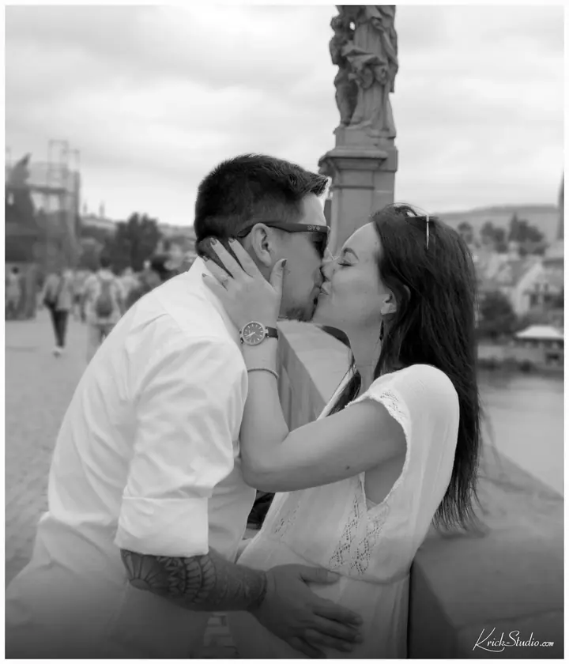
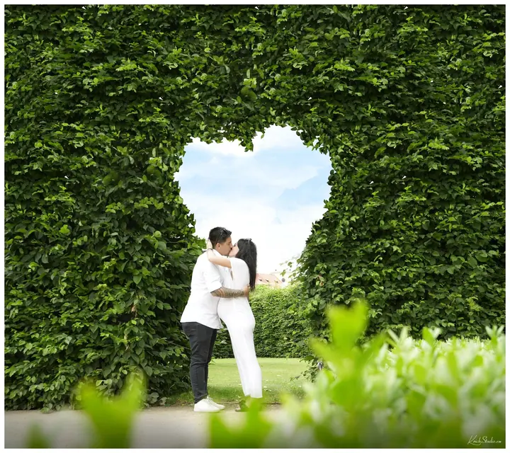

jedna
Svatební video a fotografie
Rád budu kameramanem a společníkem vašeho výjimečného dne. Nejdřív si vyslechnu vaše představy a pak přijdu i s vlastními nápady, abyste byli s výsledkem spokojení.


Jmenuji se Cristian Vera, jsem grafický designér z Chile a už řadu let žiju v České republice. Natáčím a fotím hlavně svatby, ale také těhotenská focení a propagační videa. Domluvíte se se mnou česky, anglicky i španělsky.
Více o mně
Co dělám
jedna
Rád budu kameramanem a společníkem vašeho výjimečného dne. Nejdřív si vyslechnu vaše představy a pak přijdu i s vlastními nápady, abyste byli s výsledkem spokojení.
dvě
Klidné focení budoucích rodičů venku, v zahradě nebo u vody. Bez spěchu a v uvolněné atmosféře.
tři
Kromě svatebních videí dělám i videa produktová a reklamní a natáčím firemní akce. Jako grafický designér myslím i na to, jak bude video působit jako celek.
Natáčím také taneční a hudební videa. Rád s vámi proberu vaši představu a doplním ji vlastními nápady.
Vaše představy, moje nápady.


Za objektivem
Pocházím z Chile, jsem designér a grafik a v České republice žiju dlouhodobě. Pod značkou Krick Studio tvořím především svatební videa, ale také propagační videa, záznamy firemních akcí a taneční a hudební videa.
Je pro mě důležité se s vámi před natáčením trochu poznat, abyste se pak při práci cítili dobře a uvolněně. Rád s vámi proberu vaše představy a očekávání u kávy nebo čaje, ať už se potkáme osobně, nebo online.
Vyslechnu, co si přejete, a přijdu i s řadou vlastních nápadů. Grafika a design mě naučily dívat se na celek, takže mi záleží na tom, abyste byli s výsledným videem i fotkami opravdu spokojení.
Cristian
Potkáme se osobně nebo online, u kávy či čaje. Poznáme se a vy mi řeknete, jak si svůj den představujete.
Probereme vaše očekávání a já k nim přidám vlastní nápady, abychom spolu věděli, jaký výsledek chceme.
V den D jsem s vámi jako kameraman i společník. Díky tomu, že se už známe, budete se cítit uvolněně.
Záznam pečlivě zpracuji a předám vám hotové video a fotografie, ke kterým se budete rádi vracet.
Portfolio
Fotografie jsou ilustrační
Otázky
Domluvíte se se mnou česky, anglicky a španělsky. Hodí se to třeba i na svatbách, kde se sejdou hosté z různých zemí.
Ano, a je to pro mě důležité. Rád se s vámi sejdu u kávy nebo čaje, osobně nebo online, abyste se pak při natáčení cítili dobře.
Svatby jsou mi nejbližší, ale dělám i produktová a reklamní videa, záznamy firemních akcí a taneční a hudební videa. Fotím také těhotenská focení.
Stačí datum, místo a pár slov o tom, co si představujete. Ozvu se vám a domluvíme se na společném setkání.